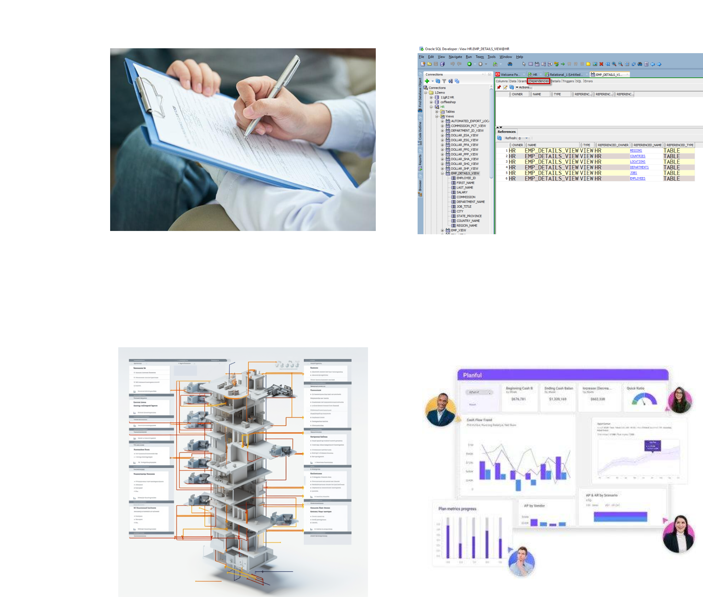
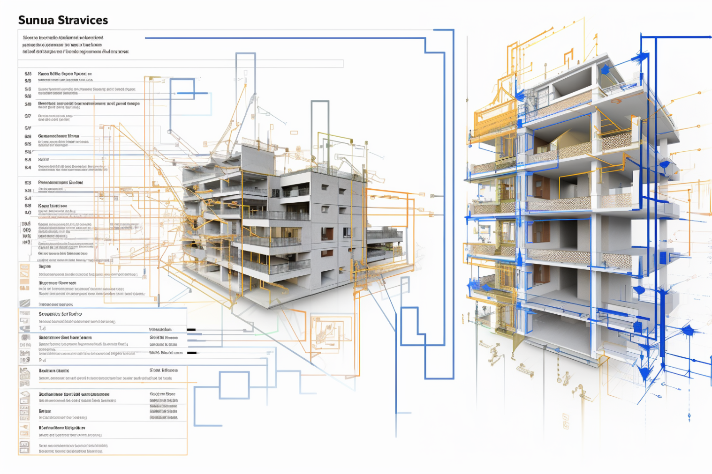
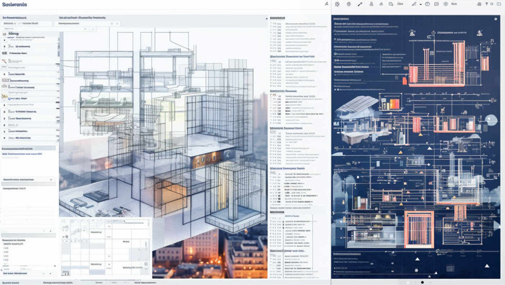

The third project aims to make the architect's environment better, so it's easier to use and sparks more creativity.
We identified a significant challenge that we could address to enhance the efficiency of architects — the considerable time spent on bureaucratic tasks related to obtaining construction permits and completing essential paperwork.

The analogy is an accounting field where professionals are tasked with documenting monthly business expenses and other metrics to aid their work. Software companies have presented a solution to streamline these processes.
"Planful" streamlines the entire workflow, enabling team to invest their precious time in more strategic matters and contribute to optimizing your organization's financial performance.
Moreover, this solution can also be integrated into architects' building templates.


"TenderScrib" extension to all workspaces is the solution to this administrative challenge, streamlining paperwork for tenders. It acts as a trusted ally, allowing architects to focus on their creative work and ensuring compliance, ultimately bringing efficiency and success to their projects. With TenderScrib, paperwork hassles become a thing of the past.
This extension analyses the parameters in the workspace, scans the shapes of the 3D model, gets all the shapes and colors. It can also check if your work meets all prerequisites for construction.
Beyond the immediate advantages, the implementation of ''TenderScrib'' has the capacity to liberate architects' time, enabling a more focused approach to the creative facets of design. This, in turn, may lead to the development of more innovative and sustainable buildings for city inhabitants.